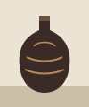

Kain songket Kuala Terengganu, 1932
Pua kumbu Saribas, 1958
Batik sarong Kelantan, 1971
Tekat cushion face Perak, 1904
Wau bulan Bachok, 1986
Keris sheath study Pahang, 1890
Mengkuang mat Johor, 1963

Labu sayong Kuala Kangsar, 1949
Songket shoulder cloth Pahang, 1927
Batik block print Terengganu, 1966
Pua kumbu Rejang, 1974
Wau kucing Kelantan, 1979
Tekat wedding fan Perak, 1911
Mengkuang pouch Melaka, 1955
Labu sayong, glazed Kuala Kangsar, 1968
Keris hilt drawing Johor, 1902
Batik tulis Kelantan, 1984
Songket sampin Terengganu, 1938
Wau jala budi Pattani route, 1991
Pua kumbu Baleh, 1969
20 works from 1890 to 1991.